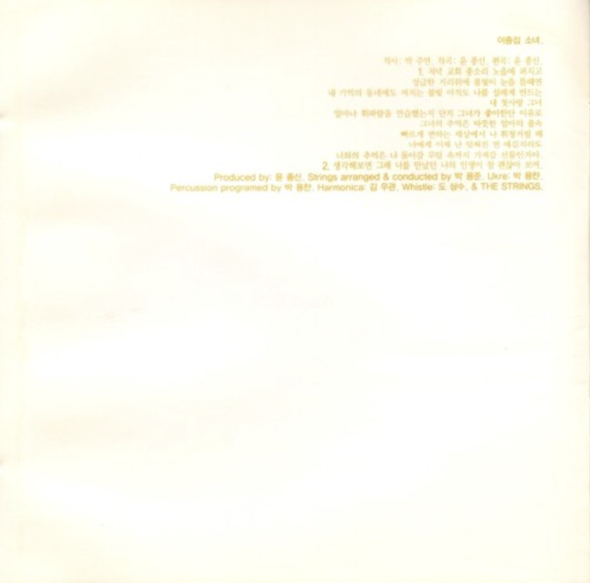
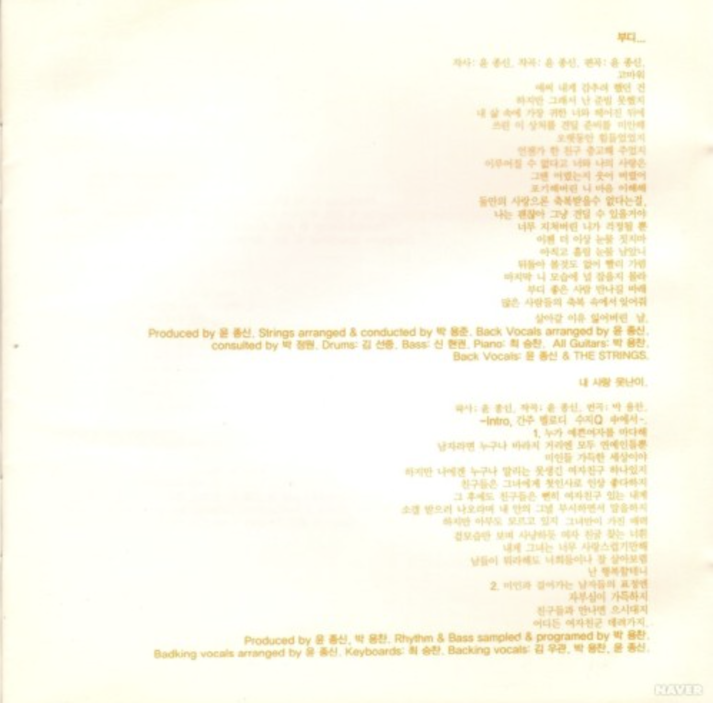
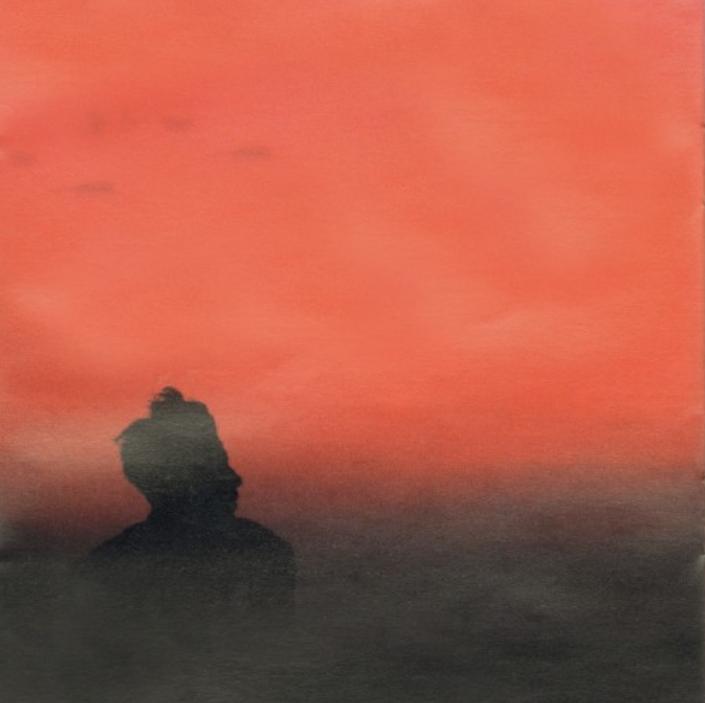
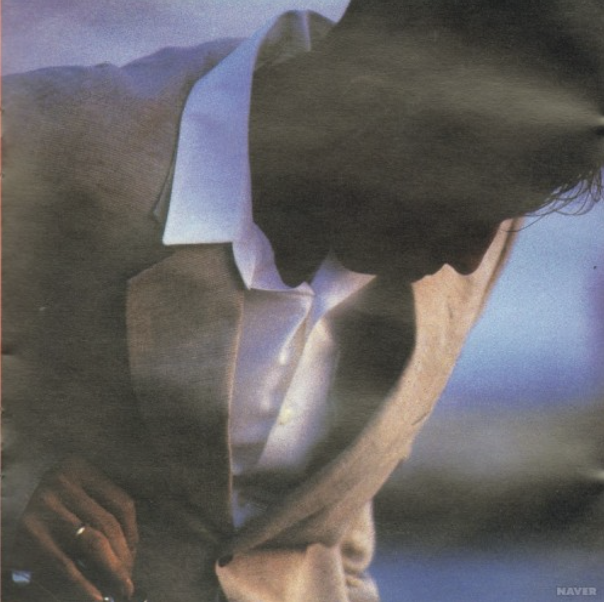
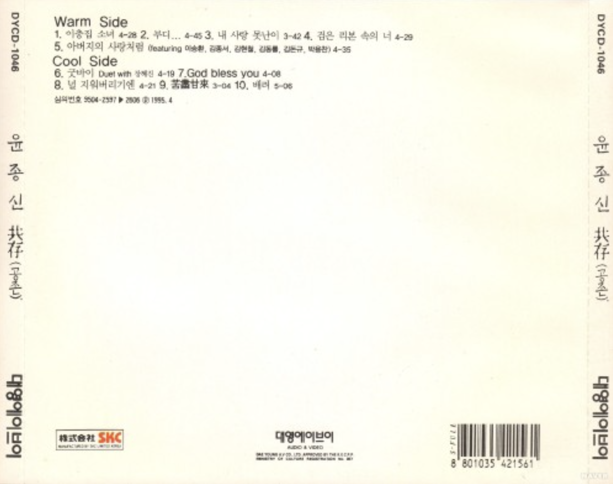

공존
<1995>
가수 소개
윤종신은 015B 객원보컬로 데뷔해 가수, 작곡가, 프로듀서, 예능인으로 폭넓게 활동한 대한민국 대표 싱어송라이터이다. ‘오래전 그날’, ‘환생’, ‘좋니’ 등의 히트곡과 섬세한 감성의 작사·작곡으로 사랑받았으며, 월간 윤종신 프로젝트를 통해 꾸준한 음악적 실험을 이어왔다. 또한 미스틱엔터테인먼트를 설립해 다양한 뮤지션을 발굴하며 프로듀서로서도 큰 영향력을 보여주었다.
앨범소개
수록곡 중 <부디>와 <내 사랑 못난이>가 함께 히트했다. 댄스 가요의 기세가 등등했던 당시, 복고를 일종의 트렌드로 각광받게 한 이 앨범은 발매 3개월 만에 60만 장이 넘는 판매고를 올리는 성공을 거두었다.
🎵




